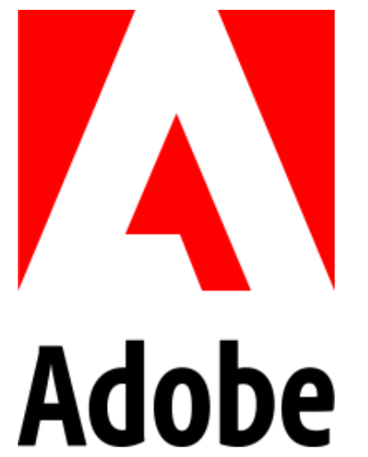
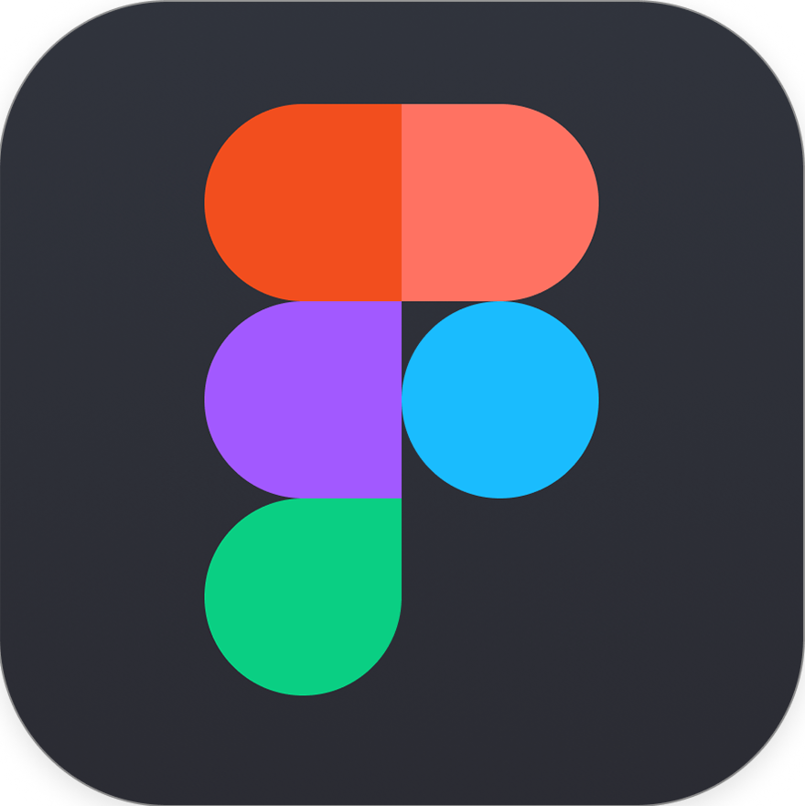
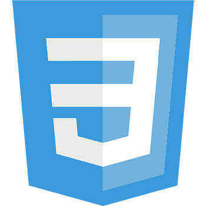
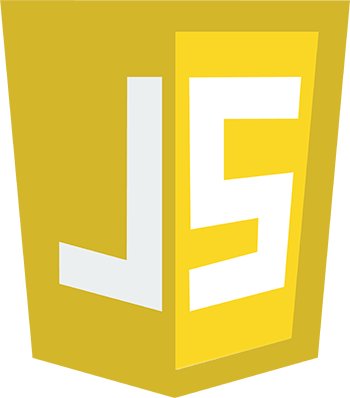

My Skills







An Interactive Media student at University of Applied Science Augsburg
With a solid background in design from my media design training, I focus on crafting engaging digital experiences. My passion lies in designing and developing for web and mobile, which I continue to explore through my Interactive Media studies at the University of Applied Sciences Augsburg.
During my apprenticeship as a media designer at ETS Didactic GmbH, I gained hands-on experience in both digital and print media. I worked extensively with tools like Adobe Creative Cloud, Figma, and Maya, and developed a keen eye for visual storytelling and user-focused design.
I'm also passionate about learning new technologies and combining creativity with technical skills. Whether I'm coding in JavaScript or Python, building interfaces, or training for my next triathlon, I bring curiosity, focus, and a love for detail to everything I do.
Pixel Adventure is a 2D pixel art platformer inspired by Celeste and Hollow Knight, combining retro visuals with modern mechanics. Built in Unreal Engine using a tilemap system and layered design, the game features precise controls, modular levels, and a clean HUD. Key features include pixel-perfect rendering, responsive keyboard input, multiplayer mode, and rich sound and visual effects. Developed as part of my Interactive Media studies, this project reflects both my design background and my passion for web and game development.
ToDo Process is a web-based task management application that allows users to create tasks and organize them with subtasks for better structure. The focus lies on usability and clarity to support everyday planning. The project was developed using Python and SQLite, with a custom backend and a simple, functional frontend.
This experimental audiovisual project explores rhythm and structure through compositing, montage, and visual layering. The aim was to translate musical principles like pulse, repetition, and variation into visual language using Adobe After Effects and/or Premiere Pro. Inspired by the concept of the "Zeitmaschine", the piece breaks conventional timelines and reconstructs time and rhythm into a new narrative flow. The result is a video that merges chaos and logic, following both conceptual and improvisational methods. The project is part of a larger investigation into rhythm as a design principle and performative structure.
This was my first self-built website, created entirely with HTML, CSS, and JavaScript. The project focused on learning the fundamentals of web development while expressing a personal visual style. All illustrations featured on the site were hand-drawn by me and integrated to create a cohesive and playful design.